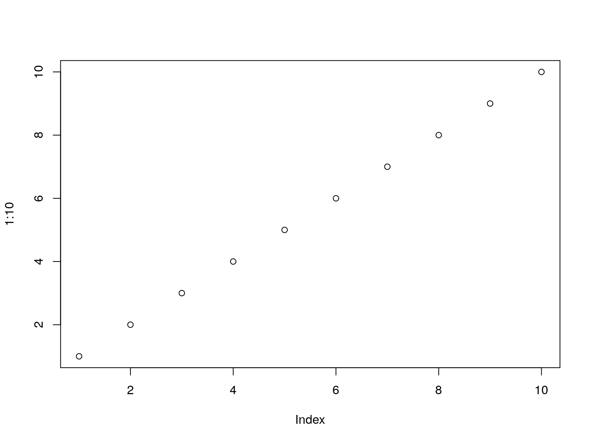

>- in front of it, instead of just -.revealjs.additions add-on, try clicking “Addins” and then scrolling down to REVEALJS.ADDITIONS.This slide has a colorful background, as well as different transitions. It also has out-of-order highlighting.
This is a slide with highlighted code, that’s not run:
x <- 1
y <- 3
x + yThis slide has code that gets run.
